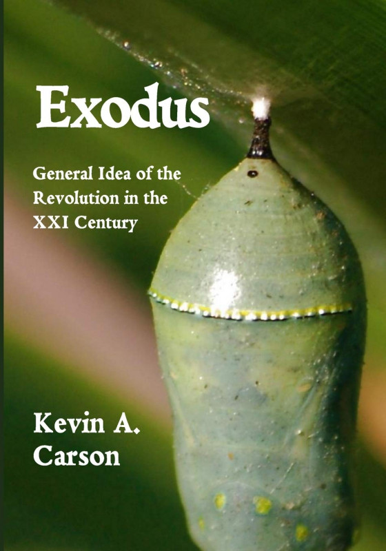
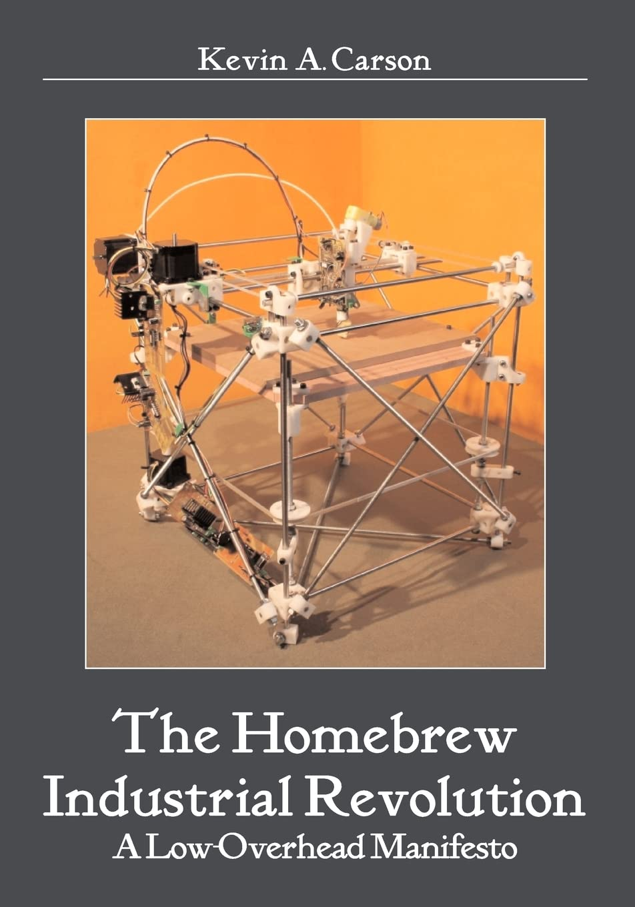

About Me
Kevin Carson is a senior fellow of the Center for a Stateless Society and holds the Center’s Karl Hess Chair in Social Theory. An anarchist, he is influenced heavily by the new municipalist movements and autonomism. His work focuses primarily on issues of systemic transition and the building blocks of postcapitalist society, along with critiques of orthodox, neoliberal, and right-libertarian economics. His published books include Studies in Mutualist Political Economy, Organization Theory: A Libertarian Perspective, The Homebrew Industrial Revolution: A Low-Overhead Manifesto, The Desktop Regulatory State, Exodus: General Idea of the Revolution in the XXI Century, and The State: Theory and Praxis, all of which are freely available to read below. Carson has also written for such print publications as The Freeman: Ideas on Liberty and a variety of internet-based journals and blogs, including The Art of the Possible, and the P2P Foundation. His own blogs, largely inactive, include Mutualist Blog and Tea, Earl Grey, Hot: Postscarcity Themes in Science Fiction.
Research Interests
- Networks
- Micromanufacturing
- Information Freedom
- Horizontalist Political Movements
- Prefigurative Politics
Donate
If you enjoy my work, please consider making a recurring donation via Patreon or a one-time donation via Paypal.
Books
-
2022
In his previous work, Carson has surveyed the crises driving transition to a post-capitalist society, new liberatory forms of technology and social organization, and the ways people are using them as building blocks for the new society emerging within the shell of the old. In this book he examines the class nature of the state, navigates between the contending errors of reformism and accelerationism, and considers how best to engage with a dying system and manage its decline while simultaneously carrying out our primary task: creating a successor system within its interstices.
-

2021
Old Left models of postcapitalist transition based on organizational mass, hierarchy, and revolutionary seizure of power are becoming increasingly irrelevant. Meanwhile, in the interstices of a dying system in hackerspaces and garage shops, neighborhood gardens, community land trusts, and municipalist movements from Jackson to Rojava to Barcelona, people are busy creating the building blocks of a new system within the interstices of a dying one. Exodus explores a model of social, political, and economic revolution driven not by violent upheaval but instead, by the process of fostering new patterns of flourishing social interaction within the shell of an increasingly brittle, unsustainable, and unjust status quo. In this book, Kevin Carson draws on his earlier insights regarding micromanufacturing technology, ephemeralization, communication, and stigmergic organization to deepen our understanding of post-capitalist transition. Examining a broad range of contemporary trends and employing a diverse array of theoretical perspectives, Carson helps us open our eyes to the possibility of a more humane and flourishing world.
-
2016
Defenders of the modern state often claim that it's needed to protect us-from terrorists, invaders, bullies, and rapacious corporations. Economist John Kenneth Galbraith, for instance, famously argued that the state was a source of "countervailing power" that kept other social institutions in check. But what if those "countervailing" institution-corporations, government agencies and domesticated labor unions-in practice collude more than they "countervail" each other? And what if network communications technology and digital platforms now enable us to take on all those dinosaur hierarchies as equals-and more than equals. In The Desktop Regulatory State, Kevin Carson shows how the power of self-regulation, which people engaged in social cooperation have always possessed, has been amplified and intensifed by changes in consciousness-as people have become aware of their own power and of their ability to care for themselves without the state-and in technology-especially information technology. Drawing as usual on a wide array of insights from diverse disciplines, Carson paints an inspiring, challenging, and optimistic portrait of a humane future without the state, and points provocatively toward the steps we need to take in order to achieve it.
-

2010
A history of the rise and fall of Sloanist mass production, and a survey of the new economy emerging from the ruins: networked local manufacturing, garage industry, household microenterprises and resilient local economies.
-
2008
This book applies the economic principles of individualist anarchism, as developed in Studies in Mutualist Political Economy, to the study of the large organization. It integrates the insights of mainstream organization theory into that framework, along with those of more radical thinkers like Ivan Illich, Paul Goodman, and R.A. Wilson.Part One examines the ways in which state intervention in the market, including subsidies to the inefficiency costs of large size and regulatory protection against the competitive consequences of inefficiency, skews the size of the predominant business artificially upward to an extent that simply could not prevail in a free market. Part Two examines the effects of such large organizational size on the character of the system as a whole. Part Three examines the internal pathologies and contradictions of organizations larger than a free market could support. And Part Four surveys the potential building blocks of an alternative, decentralized and libertarian economic order.
-
2007
This book is an attempt to revive individualist anarchist political economy, to incorporate the useful developments of the last hundred years, and to make it relevant to the problems of the twenty-first century. We hope this work will go at least part of the way to providing a new theoretical and practical foundation for free market socialist economics.
Services
Contact for freelance research, writing, and editing work.
Powered by Minimal Light theme.